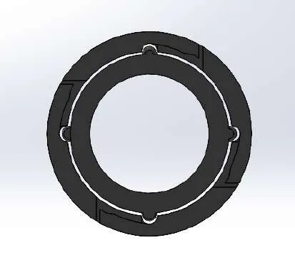
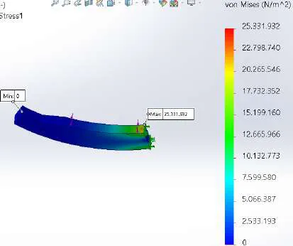
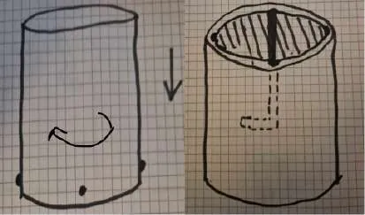
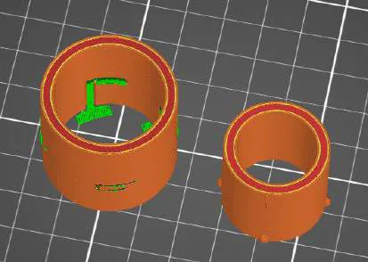
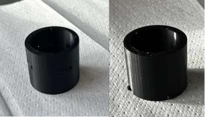

Kursus 62616 Plastteknologi · DTU · hold på 6
Bistabil låsemekanisme i PLA
En todelt printet lås, der trykkes og drejes. En tynd plastbjælke bøjes til side og fjedrer tilbage, så låsen er ubelastet i både åben og lukket stilling.
- Sammenhæng
- Kursus 62616, DTU
- Hold
- 6 personer
- Min rolle
- Skitser, bjælkeanalyse, CAD, print
- Værktøjer
- SolidWorks, FDM-print
- 25,3 MPa
- simuleret maksimal spænding (flydespænding 26)
- ~1,5 mm
- bjælkeudbøjning ved 50 N
- 2
- ubelastede hvilestillinger
Opgave og konstruktion
Opgaven: en mekanisme, der roterer eller forskydes og derved bøjer en plastbjælke; bjælken skal igen være ubelastet, når bevægelsen er afsluttet, der skal være to ubelastede hvilestillinger, og mekanismen skal fremstilles i PLA uden at overskride flydespændingen på 26 MPa.
Vores løsning er en todelt lås. En mindre cylinder med en tand skydes ind i en større cylinder og drejes derefter. Drejningen skubber en tynd bjælke til side, og bjælken fjedrer tilbage, når tanden er passeret. I både åben og låst stilling er bjælken ubelastet, hvilket forhindrer krybning i plasten.


Analyse og resultater
- Håndberegning med bjælketeori (tilfælde med indspændt bjælke, E = 3,1 GPa for PLA): ca. 1,3 mm udbøjning ved en belastning på 50 N.
- SolidWorks-simulering af samme belastning: ca. 1,5 mm udbøjning og en maksimal spænding på 25,3 MPa, lige under PLA's flydespænding på 26 MPa, så bjælken forbliver elastisk.
- Printet med 100 % fyld; de to dele passer sammen og låser.


Min del
Jeg arbejdede sammen med holdet ud fra kravspecifikationen: videreudviklede skitser, analyserede bjælkens deformerede og udeformerede områder og arbejdede derefter med CAD og det fysiske print.





